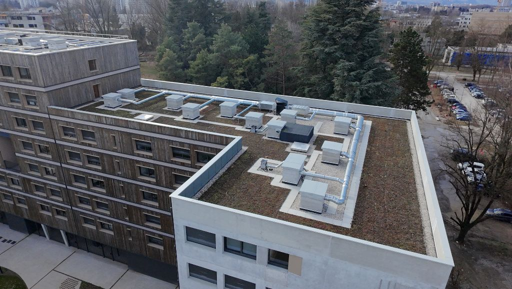

Terrasse qui fuit en Savoie : 3 solutions avant que ça empire
Les infiltrations d'eau sur une terrasse peuvent causer des dégâts considérables. Découvrez comment agir rapidement avant que la situation ne devienne critique.

Pourquoi agir rapidement ?
Une terrasse qui fuit en Savoie n'est pas qu'un simple désagrément. Le climat montagnard avec ses cycles de gel-dégel intensifs accélère la dégradation des structures. Ce qui commence par quelques taches d'humidité peut rapidement devenir :
- Des fissures structurelles dans la dalle béton
- Des infiltrations dans les pièces en dessous
- Des moisissures dangereuses pour la santé
- Une facture de rénovation multipliée par 5 ou 10
Vous habitez en Savoie, peut-être à Chambéry, Aix-les-Bains ou Albertville ? Votre terrasse présente des traces d'humidité, des flaques qui stagnent ou des infiltrations visibles au plafond de l'étage inférieur ?
Ne paniquez pas. Avec plus de 15 ans d'expérience en étanchéité en zone de montagne, nous avons réparé des centaines de terrasses en Savoie et Haute-Savoie. Dans cet article, nous partageons les 3 solutions concrètes que nous recommandons à nos clients particuliers.
Pourquoi les terrasses fuient-elles en Savoie ?
Avant de parler solutions, il faut comprendre pourquoi les terrasses savoyardes sont particulièrement vulnérables. Selon Météo France, la Savoie subit entre 80 et 120 cycles de gel-dégel par an selon l'altitude.
Les 4 causes principales :
1. Le gel-dégel intensif
L'eau s'infiltre dans les micro-fissures, gèle la nuit (expansion), dégèle le jour. Ce phénomène agrandit progressivement les fissures.
2. Les UV en altitude
Les rayons UV sont 30% plus intenses à 1500m d'altitude. Ils dégradent les revêtements d'étanchéité classiques en 5-7 ans.
3. Mauvaise mise en œuvre initiale
Pente insuffisante (en Savoie, minimum 2% obligatoire pour évacuation rapide avant gel, contrairement à la plaine où 0-1% peut être admis), joints mal réalisés, relevés trop courts : des erreurs fréquentes lors de la construction.
4. L'usure naturelle
Même bien posée, une membrane d'étanchéité a une durée de vie de 15-25 ans en climat montagnard (vs 25-30 ans en plaine).
"En Savoie, une fuite négligée pendant un hiver peut nécessiter une réfection complète de la structure porteuse. J'ai vu des réparations passer de 3 000€ à 45 000€ en seulement 18 mois."
— Jacinto DA SILVA GONCALVES, Co-gérant GFE Étanchéité
Les 3 signes d'alerte à surveiller absolument
Avant de passer aux solutions, apprenez à détecter les premiers signes. Plus vous intervenez tôt, moins ça coûte cher.
- Flaques persistantes après la pluie : L'eau stagne plus de 48h ? Votre terrasse n'a pas la pente réglementaire (minimum 2% en Savoie, contre 0-1% admis en plaine — en montagne, l'évacuation rapide avant gel est cruciale). L'eau stagnante s'infiltre progressivement.
- Traces d'humidité au plafond intérieur : Auréoles jaunâtres, peinture qui cloque, moisissures : l'eau traverse déjà votre dalle. Agissez dans les 30 jours maximum.
- Fissures visibles sur le revêtement : Même minuscules, les fissures s'élargissent avec le gel. Une fissure de 2mm peut devenir 2cm en un hiver savoyard rigoureux.
Solution n°1 : Le traitement d'urgence (temporaire)
Situation : Vous détectez une fuite active (eau qui goutte au plafond) mais vous êtes en plein hiver ou vous n'avez pas le budget immédiat.
Ce que vous pouvez faire vous-même :
- Nettoyez la zone : Enlevez feuilles, mousse, débris qui retiennent l'eau
- Appliquez un mastic bitumineux : Disponible en magasin de bricolage, il colmate temporairement les petites fissures
- Posez une bâche EPDM : Protection provisoire contre la pluie et la neige (fixez-la avec des poids, pas de perçage !)
Attention : Solution temporaire uniquement !
Ces actions ne remplacent PAS une réparation professionnelle. Elles vous donnent 3 à 6 mois de répit maximum. Une étanchéité définitive sera obligatoire avant le prochain hiver.
Coût : 50-150€ en matériaux
Durée : 2-4 heures
Efficacité : 3-6 mois maximum
Solution n°2 : La réparation localisée (économique)
Situation : La fuite est récente, localisée sur une petite surface (moins de 10m²), et le reste de votre étanchéité est en bon état général.
La méthode professionnelle :
Un étancheur professionnel certifié va réaliser une réparation par patch :
- Identification précise de la source de la fuite (test à l'eau si nécessaire)
- Découpe et élimination de la zone endommagée
- Préparation du support (nettoyage, primer d'accrochage)
- Pose d'une membrane compatible avec l'existant (bitume SBS, PVC, EPDM ou TPO)
- Soudure ou collage avec recouvrement minimum de 10cm
- Test d'étanchéité post-intervention
L'avantage en Savoie
Chez GFE, nous utilisons des membranes spécifiquement sélectionnées pour résister au climat alpin : résistance UV renforcée, flexibilité jusqu'à -40°C, garantie décennale incluse.
Cette solution est idéale si votre revêtement général a moins de 10 ans et que la fuite provient d'un défaut ponctuel (fissure, joint défaillant, relevé endommagé).
Coût moyen : 800€ - 2 500€ TTC
Durée travaux : 1 journée
Garantie : 10 ans (décennale)
Durée de vie : 10-15 ans
Solution n°3 : La réfection complète (définitive)
Situation : Votre étanchéité a plus de 15 ans, présente plusieurs zones de fuites, ou le revêtement est craquelé sur la majorité de la surface.
Pourquoi c'est souvent inévitable ?
Selon les normes DTU du CSTB (Centre Scientifique et Technique du Bâtiment), une membrane d'étanchéité en climat montagnard a une durée de vie limitée :
- Bitume traditionnel : 15-20 ans
- EPDM : 20-25 ans
- PVC armé : 20-30 ans
- Bitume SBS modifié (recommandé GFE) : 25-35 ans
Passé ces délais, multiplier les réparations localisées revient plus cher qu'une réfection complète. C'est ce qu'on appelle l'effet "rustine" : vous payez 2000€, puis 1500€ six mois plus tard, puis encore 2000€... Total : 5500€ pour une solution provisoire.
Les étapes d'une réfection complète :
- Diagnostic complet : Inspection visuelle + test d'étanchéité + caméra thermique si nécessaire. Détection de toutes les zones faibles.
- Dépose de l'ancien revêtement : Retrait complet de l'étanchéité défaillante. Évacuation en déchetterie agréée (respectant les normes environnementales).
- Préparation du support : Réparation des fissures structurelles, ragréage si nécessaire, création ou correction de la pente d'écoulement.
- Pose de la nouvelle étanchéité : Membrane adaptée au climat savoyard : étanchéité bitumineuse bicouche (SBS modifié), PVC armé ou EPDM. Avec relevés conformes aux DTU.
- Protection de surface (optionnel) : Pose de dallettes sur plots, gravillons ou végétalisation pour protéger la membrane des UV et du piétinement.
Coût moyen : 80€ - 150€/m² TTC (selon complexité)
Durée travaux : 3-7 jours pour 50-80m²
Garantie : 10 ans (décennale obligatoire)
Durée de vie : 20-30 ans
Quel matériau choisir pour votre terrasse en Savoie ?
| Matériau | Durée de vie | Prix/m² | Avantages Savoie |
|---|---|---|---|
| Bitume SBS bicouche RECOMMANDÉ GFE | 25-35 ans | 75-115€ | Éprouvé montagne, résiste gel/dégel, auto-cicatrisant, très fiable |
| PVC armé | 25-30 ans | 80-120€ | Excellent UV, soudure étanche, résiste gel |
| EPDM | 20-25 ans | 70-100€ | Économique, souple, installation rapide |
| TPO | 25-30 ans | 90-140€ | Résistance UV élevée, écologique, flexible -40°C |
Chez GFE, nous recommandons l'étanchéité bitumineuse bicouche (SBS modifié) pour les terrasses en Savoie : c'est la solution la plus éprouvée en zone de montagne, avec un excellent rapport qualité-prix-durabilité. Le bitume SBS résiste parfaitement aux cycles gel-dégel intensifs (100+ cycles/an), possède des propriétés auto-cicatrisantes et offre une fiabilité de 25 à 35 ans. Nous en avons posé sur plus de 300 terrasses à Chambéry, Haute-Savoie et Isère avec un taux de satisfaction de 98%.
Pourquoi GFE privilégie le bitume SBS en montagne ?
- Performance éprouvée : Utilisé depuis 40 ans en haute montagne, résultats prouvés
- Résistance extrême : Supporte de -40°C à +100°C sans se fissurer
- Auto-réparation : Les micro-fissures se rebouchent naturellement avec la chaleur
- Durabilité : 25-35 ans de longévité en conditions alpines réelles
- Réparabilité : Facile à réparer localement en cas de dommage ponctuel
- Rapport qualité-prix : Le meilleur coût au m²/année de service
Solution n°3 : L'isolation + étanchéité (optimale)
Situation : Votre terrasse fuit ET vous constatez des pertes de chaleur importantes, ou votre isolation a plus de 20 ans.
La solution 2-en-1 :
Plutôt que de refaire uniquement l'étanchéité, profitez des travaux pour améliorer l'isolation thermique. C'est ce qu'on appelle une réfection complète par l'extérieur.
Les avantages :
- Économies d'énergie : 20-30% de réduction sur votre facture chauffage (source : ADEME)
- Confort thermique : Fini le froid aux pieds en hiver
- Valorisation immobilière : Amélioration du DPE (Diagnostic de Performance Énergétique)
- Aides financières : MaPrimeRénov', éco-PTZ, CEE disponibles
Les aides financières en 2026
Pour une réfection avec isolation en Savoie, vous pouvez bénéficier de :
- MaPrimeRénov' : 15€ à 75€/m² selon revenus (infos sur maprimerenov.gouv.fr)
- Éco-PTZ : Prêt à taux zéro jusqu'à 50 000€
- CEE : Certificats d'Économies d'Énergie (300-800€)
- TVA réduite : 5,5% au lieu de 20%
Coût moyen : 120€ - 200€/m² TTC (isolation incluse)
Durée travaux : 5-10 jours pour 50-80m²
Garantie : 10 ans (décennale)
Durée de vie : 25-35 ans
ROI énergétique : 8-12 ans
Cas concrets : 3 terrasses réparées en Savoie
📍 Cas n°1 : Résidence à Chambéry (73)
Problème : Copropriété de 12 lots, fuites récurrentes depuis 2 ans, multiples interventions sans succès.
Âge étanchéité : 18 ans (bitume traditionnel)
Solution : Réfection complète en étanchéité bitumineuse bicouche SBS modifié
Coût : 7 650€ TTC pour 85m²
Résultat : Plus aucune fuite depuis 3 ans, garantie jusqu'en 2036
→ En savoir plus sur nos interventions à Chambéry
📍 Cas n°2 : Maison individuelle à Albertville (73)
Problème : Infiltration visible au plafond du salon après chaque épisode neigeux.
Âge étanchéité : 12 ans (EPDM)
Solution : Réparation localisée (joint de relevé défaillant) + pose de bandes d'étanchéité renforcées
Coût : 1 450€ TTC
Résultat : Problème résolu en 1 journée, aucune récidive
→ Découvrez notre expertise à Albertville
📍 Cas n°3 : Chalet à Aix-les-Bains (73)
Problème : Terrasse de 110m² avec étanchéité originale vieillissante (22 ans), fissures multiples.
Âge étanchéité : 22 ans (bitume autoprotégé)
Solution : Réfection complète + isolation thermique 140mm + finition gravillons
Coût : 16 800€ TTC - Aides : -4 200€ (MaPrimeRénov' + CEE)
Coût réel : 12 600€
Résultat : Facture chauffage réduite de 28%, confort optimal, garantie 10 ans
→ Nos réalisations à Aix-les-Bains
Comment choisir la bonne solution pour votre terrasse ?
Voici un arbre de décision simple pour vous orienter :
Étanchéité de moins de 10 ans + fuite localisée unique
→ Solution n°2 : Réparation localisée
Étanchéité de 15+ ans OU multiples fuites OU fissures généralisées
→ Solution n°3 : Réfection complète
Fuite active + pas de budget immédiat + hors saison travaux
→ Solution n°1 : Traitement d'urgence (puis planifier réparation définitive)
Étanchéité ancienne + factures chauffage élevées + isolation vétuste
→ Solution n°3 bis : Isolation + étanchéité (avec aides financières)
Les erreurs à éviter absolument
Erreur n°1 : Attendre le printemps
"On attendra les beaux jours"... En attendant, l'eau s'infiltre, gèle, détruit l'isolation et fragilise la structure. Résultat : facture multipliée par 3 ou 4.
Erreur n°2 : Faire appel à un généraliste
L'étanchéité en montagne est un métier spécifique. Un maçon ou un couvreur traditionnel n'a pas forcément les compétences. Exigez un étancheur certifié avec expérience en climat alpin.
Erreur n°3 : Choisir le devis le moins cher
Un devis 30% moins cher cache souvent : matériaux bas de gamme, pas de garantie décennale, non-respect des DTU. Vous paierez deux fois.
Erreur n°4 : Réparer soi-même (hors urgence)
Sauf colmatage temporaire, l'étanchéité nécessite du matériel professionnel (soudure à air chaud, membranes techniques). Une mauvaise réparation empire souvent le problème.
Réglementation et normes en Savoie
L'étanchéité des toitures-terrasses est encadrée par plusieurs DTU (Documents Techniques Unifiés) :
- DTU 43.1 : Étanchéité des toitures-terrasses avec éléments porteurs en maçonnerie
- DTU 43.4 : Toitures en éléments porteurs en bois ou panneaux dérivés
- DTU 43.11 : Étanchéité des toitures-terrasses avec isolation inverse
Ces normes imposent notamment :
- Une pente minimum de 2% pour l'évacuation des eaux en Savoie (DTU 43.1 impose 1% minimum en plaine, mais 2% est obligatoire en zone de montagne pour évacuation avant gel)
- Des relevés d'étanchéité de 15cm minimum au-dessus du niveau fini
- Une garantie décennale obligatoire pour tout professionnel intervenant
- Des systèmes d'étanchéité conformes aux Avis Techniques du CSTB
En Savoie, certaines communes de montagne imposent aussi des contraintes architecturales (couleurs, matériaux visibles). Renseignez-vous auprès de votre mairie avant travaux. Pour en savoir plus sur la réglementation, consultez notre article Réglementation étanchéité 2026.
Quand planifier les travaux en Savoie ?
Le climat savoyard impose des fenêtres de travaux optimales :
Périodes IDÉALES
- Mai à septembre : Températures stables, faible risque de pluie, pose optimale
- Septembre-octobre : Avant les premières neiges, températures encore clémentes
⏱️ Délai d'attente : 4-8 semaines en haute saison
Périodes À ÉVITER
- Décembre à mars : Gel permanent, neige, conditions dangereuses
- Novembre : Températures trop basses pour certaines membranes
⚠️ Seules les réparations d'urgence sont possibles
Conseil de pro
Contactez un professionnel en mars-avril pour planifier des travaux en mai-juin. Vous éviterez les délais d'attente de la haute saison (juillet-août) et bénéficierez de tarifs plus compétitifs.
Zones de Savoie particulièrement concernées
Certaines zones savoyardes sont plus exposées aux problèmes d'étanchéité :
- Combe de Savoie (Albertville, Montmélian) : Fortes variations thermiques jour-nuit
- Bassin chambérien (Chambéry, La Motte-Servolex) : Humidité du lac du Bourget + gel hivernal
- Stations de ski (Val Thorens, Courchevel, Méribel) : Altitude, charge de neige extrême (300-600 kg/m²), UV intenses
- Avant-pays savoyard (Aix-les-Bains, Rumilly) : Pluies fréquentes automne-printemps
Quelle que soit votre localisation en Savoie ou Haute-Savoie, GFE intervient sous 4 jours ouvrés pour un diagnostic gratuit.
Combien coûte vraiment une réparation de terrasse en Savoie ?
Soyons transparents. Voici les fourchettes de prix réels 2026 pratiqués en Savoie :
| Type d'intervention | Prix TTC | Durée |
|---|---|---|
| Diagnostic seul | 250-400€ GRATUIT chez GFE | 1-2h |
| Colmatage d'urgence | 300-600€ | 2-4h |
| Réparation localisée (< 10m²) | 800-2 500€ | 1 jour |
| Réfection complète (50-80m²) | 4 000-12 000€ | 3-7 jours |
| Réfection + isolation (50-80m²) | 9 000-16 000€ - Aides : 3 000-6 000€ |
5-10 jours |
Prix indicatifs TTC incluant fourniture, pose, évacuation et garantie décennale. Variables selon accès, complexité et finition choisie.
Pourquoi faire appel à un spécialiste montagne ?
Tous les étancheurs ne se valent pas en Savoie. Le climat alpin impose des compétences spécifiques :
- Choix des matériaux adaptés : Résistance gel-dégel, UV haute altitude, charges de neige
- Maîtrise des techniques montagne : Évacuation des eaux en forte pente, gestion condensation altitude
- Connaissance des contraintes locales : PLU montagne, zones ABF (Architectes des Bâtiments de France)
- Respect des délais saisonniers : Planification en fonction des conditions météo locales
GFE (Goncalves Frères Étanchéité) est spécialisé depuis 2011 dans l'étanchéité en zone de montagne. Nous intervenons sur toute la Savoie, la Haute-Savoie, l'Isère et le Rhône.
"Nous avons fait appel à GFE pour notre terrasse qui fuyait depuis 2 ans. Trois entreprises avant eux avaient échoué. Jacinto a identifié le problème en 10 minutes : un relevé mal réalisé sur le mur nord. Réparation effectuée en une journée, plus aucune fuite depuis 18 mois."
— Claire M., propriétaire à Chambéry
Nos réalisations récentes
GFE a réalisé plus de 450 projets d'étanchéité en Auvergne-Rhône-Alpes, dont de nombreux chantiers emblématiques :

Student Factory
Gières (38)
Résidence étudiante • 2 800m²
Voir le projet →

Hôtel Joséphine Baker
Val Thorens (73)
Hôtel 4* en altitude • 1 200m²
Voir le projet →

Télésiège du Jandri
Les 2 Alpes (38)
Gare d'altitude • Conditions extrêmes
Voir le projet →
Ces projets témoignent de notre expertise en conditions alpines difficiles. Si nous étanchéifions des infrastructures en station à 2300m d'altitude, nous maîtrisons parfaitement les terrasses de particuliers en vallée !
Questions fréquentes
Comment savoir si ma terrasse est bien étanche ?
Plusieurs signes indiquent une étanchéité défaillante : flaques persistantes après 48h de pluie, taches d'humidité au plafond intérieur, décollement du revêtement, fissures visibles, mousses ou végétation, odeur de moisi dans la pièce du dessous. Si vous constatez UN de ces signes, faites réaliser un diagnostic gratuit rapidement.
Puis-je poser des dalles directement sur ma terrasse qui fuit ?
Non, surtout pas ! Poser des dalles sur une étanchéité défaillante va : masquer le problème temporairement, emprisonner l'humidité qui va dégrader la structure, rendre le diagnostic plus difficile et coûteux, et aggraver les infiltrations. Il faut TOUJOURS traiter l'étanchéité avant de poser un revêtement. Pour en savoir plus, consultez notre guide sur les dallettes sur plots.
Combien de temps dure une réparation d'étanchéité ?
Ça dépend de l'ampleur des travaux : Réparation localisée : 1 journée (retour à l'usage : immédiat). Réfection 50m² : 3-4 jours (séchage inclus). Réfection + isolation 80m² : 5-7 jours. Chantier complexe (accès difficile, relevés multiples) : 7-10 jours. Chez GFE, nous nous engageons sur un délai ferme avant démarrage et respectons scrupuleusement le planning annoncé.
Ma terrasse a 20 ans sans fuite. Dois-je la refaire ?
Pas nécessairement, MAIS faites réaliser une inspection préventive. En Savoie, une étanchéité de 20 ans est en fin de vie théorique. Si l'inspection révèle : micro-fissures nombreuses, membrane durcie/craquelée, relevés dégradés → planifiez une réfection avant la première fuite. C'est moins cher que d'attendre les dégâts. Si l'état est bon, re-contrôlez dans 2-3 ans.
Quelle garantie dois-je exiger ?
Pour tout travail d'étanchéité, la garantie décennale est OBLIGATOIRE (loi Spinetta). Vérifiez que votre artisan possède : une attestation d'assurance décennale valide, un numéro SIRET actif, des références vérifiables. Méfiez-vous des auto-entrepreneurs sans assurance ou des devis sans mention de garantie. Chez GFE, nous fournissons systématiquement notre attestation décennale avec chaque devis. Selon Service-Public.fr, cette garantie couvre les dommages compromettant la solidité de l'ouvrage pendant 10 ans.
Puis-je obtenir des aides financières pour ma terrasse ?
Oui, SI vous combinez étanchéité + isolation thermique. Les aides disponibles : MaPrimeRénov' : 15-75€/m² selon revenus (infos sur maprimerenov.gouv.fr). Éco-PTZ : Prêt 0% jusqu'à 50 000€. CEE : Prime énergie de 300-800€. TVA 5,5% : Au lieu de 20% si travaux d'amélioration énergétique. IMPORTANT : Étanchéité seule (sans isolation) = PAS d'aides. Pour bénéficier des aides, votre professionnel doit être certifié RGE (Reconnu Garant de l'Environnement).
Combien de temps avant de pouvoir remarcher sur ma terrasse ?
Ça dépend du système posé : Bitume SBS (recommandé GFE) : Immédiat après travaux. Membrane PVC/TPO soudée : Immédiat après travaux (marche légère), 24h pour usage normal. EPDM collé : 24-48h (temps de polymérisation de la colle). Résine liquide (SEL) : 24-72h selon température. Si vous posez ensuite des dalles ou gravillons, comptez +1 journée. En Savoie, attention aux travaux d'automne : températures basses rallongent le séchage.
Faut-il une autorisation pour refaire l'étanchéité de ma terrasse ?
En général, NON si vous conservez l'aspect extérieur identique (même couleur, même hauteur). Déclaration préalable OBLIGATOIRE si : Modification de l'aspect extérieur (changement de couleur, ajout garde-corps). Rehausse de la terrasse > 20cm. Bâtiment en zone protégée (périmètre ABF, secteur sauvegardé). En cas de doute, consultez le service urbanisme de votre mairie. À Chambéry, Aix-les-Bains et dans les stations de ski classées, les règles sont parfois plus strictes. GFE vous accompagne dans ces démarches administratives.
Peut-on réparer une terrasse en hiver en Savoie ?
Oui, MAIS avec de grosses contraintes. Les réparations d'hiver sont possibles si : Température > 5°C minimum pendant la pose. Surface sèche (pas de neige, pluie ou givre). Intervention d'urgence justifiée (fuite active). Utilisation de matériaux spécifiques (résines basse température). ATTENTION : Coût majoré de 20-40% (conditions difficiles, rendement réduit, séchage rallongé). Durabilité potentiellement réduite. Certaines garanties constructeur exclues. Notre conseil : sauf urgence absolue, attendez avril-mai. Si vous DEVEZ intervenir en hiver, contactez GFE pour une solution d'urgence adaptée.
Votre terrasse fuit ? Agissez maintenant !
Obtenez un diagnostic gratuit et un devis détaillé sous 4 jours ouvrés. Intervention en Savoie, Haute-Savoie, Isère et Rhône.
Ou appelez-nous directement : 09 83 48 26 97
Articles connexes
.jpg)
Étanchéité en montagne
Les spécificités du climat alpin et les solutions adaptées
Lire la suite →
Dallettes sur plots
Comment protéger et embellir votre terrasse étanche
Lire la suite →